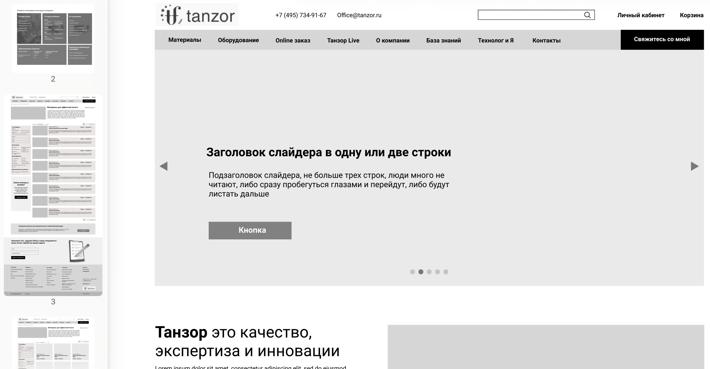
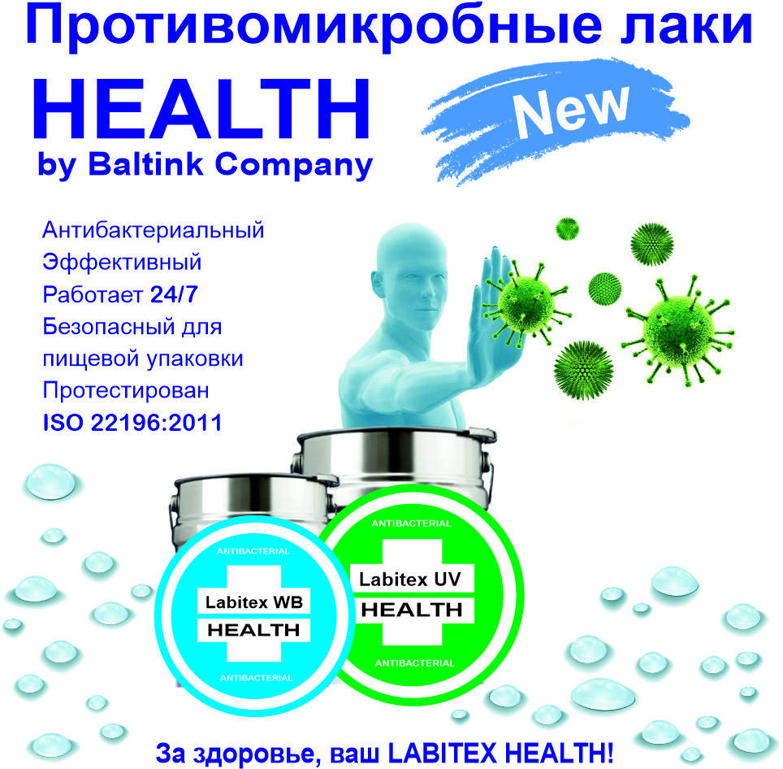
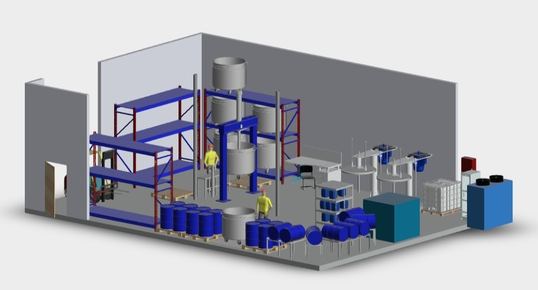
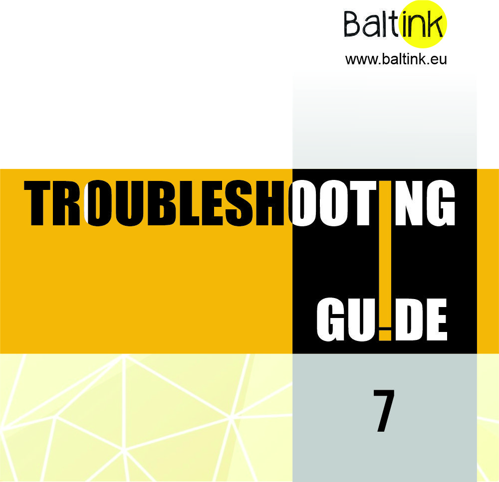

ЗАДАЧА 01
Цифровая площадка
Создать сайт, который станет долгосрочным инструментом презентации компании и продукции.
Комплексная работа над маркетингом производителя и поставщика материалов для полиграфической отрасли: от позиционирования и структуры сайта до продвижения продукции, производственных возможностей и профессиональной экспертизы.
В Танзоре я отвечала за маркетинговое направление: создание цифровой площадки с нуля, продуктовый маркетинг и вывод на рынок новых продуктов, а также представление производственной экспертизы компании для профессиональной аудитории.
Разработана структура, позиционирование и контент для сложных продуктов.




Компания нуждалась в современной цифровой площадке и системе коммуникаций, которые объясняли бы техническую экспертизу и продуктовую линейку. Как руководитель отдела маркетинга, я отвечала за стратегию, создание сайта, продуктовый маркетинг и представление производственных возможностей.
Создать сайт, который станет долгосрочным инструментом презентации компании и продукции.
Вывести на рынок линейку LABITEX Health и представить её технические особенности.
Показать производственное направление SIA Baltink и профессиональные компетенции.
Я формировала концепцию и структуру сайта, работала над позиционированием и содержанием разделов. Для выбора подрядчика организовала многоэтапный отбор: подготовила презентацию проекта, изучила брифы, провела онлайн-встречи и оценила опыт участников. По итогам выбрала команду для реализации.
При разработке было важно создать удобное цифровое пространство, которое можно развивать в долгосрочной перспективе и использовать для презентации продукции и экспертных материалов компании.
Замените изображение на выбранный скриншот главной страницы сайта.
Структура сайта — только если её можно публиковать.
Фрагмент макета, разрешённый к показу в портфолио.
Сайт: tanzor.ru.
Структура и макет сайта
Для сайта разрабатывались тематические разделы, которые помогали рассказывать о полиграфических технологиях. Например, «Технолог и я» - для практических вопросов отрасли, и «Мистер и миссис CMYK» - о цвете и технологиях печати.
Я занималась продвижением линейки LABITEX Health - лаков с противомикробными свойствами. Важно было представить назначение и технические особенности продукта профессиональной аудитории. Также продвигала производственное направление SIA Baltink в Латвии и размещала материалы в отраслевых изданиях.
Продвижение LABITEX Health
3D-визуализация производственного цеха
Для представления производственных возможностей SIA Baltink в Латвии я подготовила 3D-визуализацию цеха. Это позволило показать масштаб и организацию производства без раскрытия конфиденциальных технологических деталей.
Сайт продолжает работать и используется для презентации компании и продукции.
Продукт представлен профессиональной аудитории, материалы опубликованы в изданиях.
Компания получила цифровое выставочное пространство на Printing Expo.
Я руководила маркетинговым направлением: от формулирования задач и разработки цифровой площадки до продуктового продвижения, контента и представления производственной экспертизы.
Координировала взаимодействие с подрядчиком и участвовала в подготовке маркетинговых материалов для профессиональной аудитории. Результат - сайт, который продолжает работать, и цифровая площадка для представления компании, продукции и её компетенций.
Позиционирование, структура, выбор подрядчика и запуск.
Вывод LABITEX Health, материалы для профессиональной аудитории.
Тематические разделы, отраслевые издания, 3D-стенд на Printing Expo.